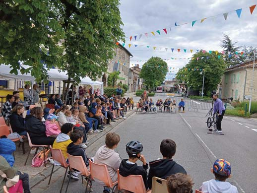

14 Enfance et Jeunesse ( ( ( A partir de la rentrée 2026, le conseil d’administration, la direction et l’équipe d’animation offriront encore aux en- fant un accueil périscolaire, les matins (7h30/8h30), midis (12h/13h30), et soirs (16h/18h30) ainsi que tous les mercredis et sur une grande partie des vacances scolaires (7h30/18h30) . Le lien étroit entre la municipalité, les directeurs d’école, la CAF et les services jeunesse et sport, permet de main- tenir un accueil de qualité et accessible à tous les en- fants, scolarisés ou non à l’école de Montpezat de Quercy. Plus qu’un simple mode de garde, le Clan développe un véritable projet éducatif et pédagogique centré sur le bien-être, l’épanouissement et l’accompagnement de chaque enfant . L’ensemble des équipes mobilise ses compétences et son énergie a�n d’offrir un cadre sécurisant, stimulant et bienveillant, favorisant l’expression, l’autonomie, la dé- couverte et les apprentissages. À travers des expériences adaptées au rythme et aux be- soins de chacun, nous accompagnons les enfants dans la construction de leur personnalité, le vivre-ensemble et l’apprentissage de leur rôle de citoyen. En 2026, l’association CLAN a poursuivi le développement de son projet éducatif et pédagogique à destination des enfants de 3 à 12 ans, tout en amorçant une ré�exion au- tour de l’accueil des jeunes adolescents du territoire. Grâce à l’engagement d’une équipe éducative dyna- mique et à l’investissement de nos bénévoles, nous avons pu maintenir notre dispositif d’accompagnement à la scolarité « Un parcours de réussite pour toutes et tous », organisé les lundis, mardis et jeudis soir. Soutenus par la CAF, la MSA et une municipalité impli- quée, nous avons également maintenu nos actions en direction des familles à travers les « Causeries » , des temps d’échange et de ré�exion autour de la parentalité. Le CLAN s’est aussi engagé dans la co-construction d’un partenariat avec le collectif «Terre Franche » autour du projet « De la terre à l’assiette » . Ce projet vise à sensi- biliser les enfants à l’environnement, à l’alimentation du- rable et au monde vivant à travers des expériences concrètes et immersives. Un espace nature sera amé- nagé a�n de permettre aux enfants d’explorer, manipu- ler, expérimenter et développer leur imagination au contact du vivant. Parce que la vie est aussi faite de belles découvertes et LE CLAN LE CLAN de rencontres enrichissantes, les enfants ont eu l’oppor- tunité de béné�cier d’un nouveau partenariat avec Vin- cent Beaume, artiste Photographe. À travers la découverte de sa « camera obscura », ils ont voyagé au cœur de l’histoire de la photographie tout en expérimentant une approche sensible et artistique de l’image. Ce projet a permis aux enfants d’entrer avec cu- riosité, concentration et émerveillement dans l’appren- tissage de la photographie, en développant leur capacité d’observation, leur imagination et le regard qu’ils portent sur la nature et l’environnement qui les entourent. Fidèle à ses valeurs d’éducation populaire, le CLAN a pro- posé aux enfants, sur plusieurs mois, un projet de créa- tion collective autour de la reconstruction d’une grande maquette représentant leur école, leur centre et leurs espaces de loisirs . Chaque enfant a ainsi été invité à ima- giner et à construire « la cour de ses rêves », en mobilisant sa créativité, son imagination et sa capacité à coopérer avec les autres. Mené en partenariat avec la compagnie « La Brebis Égarée », ce projet a également donné lieu à la réalisation d’un court-métrage valorisant les produc- tions des enfants. Cette démarche a permis d’ouvrir un véritable espace de ré�exion partagée avec les établisse- ments scolaires, a�n d’envisager des pistes d’aménage- ment et de transformation des espaces, au plus près des besoins, des envies et des rêves des enfants. Pour �nir, le CLAN a encore proposé un séjour destiné aux enfants de 6 à 12 ans et a élargi ses objectifs péda- gogiques en mettant en place un mini-séjour destiné aux enfants de 3 à 6 ans. Nous restons disponibles pour toutes informations et/ou questions : club.animation.nature@orange.fr